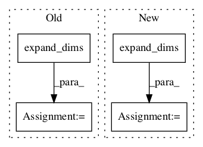

fcd690b14b04c11e7f25b9d473db056c4b7947b3,official/vision/keras_cv/ops/iou_similarity.py,,iou,#Any#Any#,59

Before Change
intersections = intersection(box1, box2)
areas1 = area(box1)
areas2 = area(box2)
unions = (
tf.expand_dims(areas1, 1) + tf.expand_dims(areas2, 0) - intersections)
return tf.where(
tf.equal(intersections, 0.0), tf.zeros_like(intersections),
tf.truediv(intersections, unions))
After Change
boxes_areas = area(boxes)
boxes_rank = len(boxes_areas.shape)
boxes_axis = 1 if (boxes_rank == 2) else 0
gt_boxes_areas = tf.expand_dims(gt_boxes_areas, -1)
boxes_areas = tf.expand_dims(boxes_areas, boxes_axis)
unions = gt_boxes_areas + boxes_areas
unions = unions - intersections
return tf.where(
tf.equal(intersections, 0.0), tf.zeros_like(intersections),
tf.truediv(intersections, unions))
In pattern: SUPERPATTERN
Frequency: 3
Non-data size: 4
Instances
Project Name: tensorflow/models
Commit Name: fcd690b14b04c11e7f25b9d473db056c4b7947b3
Time:
Author: null
File Name: official/vision/keras_cv/ops/iou_similarity.py
Class Name:
Method Name: iou
Project Name: broadinstitute/keras-rcnn
Commit Name: 3c397401a06de998cd99a6da2e97d4daecb44c9c
Time:
Author: null
File Name: keras_rcnn/backend/common.py
Class Name:
Method Name: clip
Project Name: broadinstitute/keras-rcnn
Commit Name: 3c397401a06de998cd99a6da2e97d4daecb44c9c
Time:
Author: null
File Name: keras_rcnn/backend/common.py
Class Name:
Method Name: bbox_transform_inv